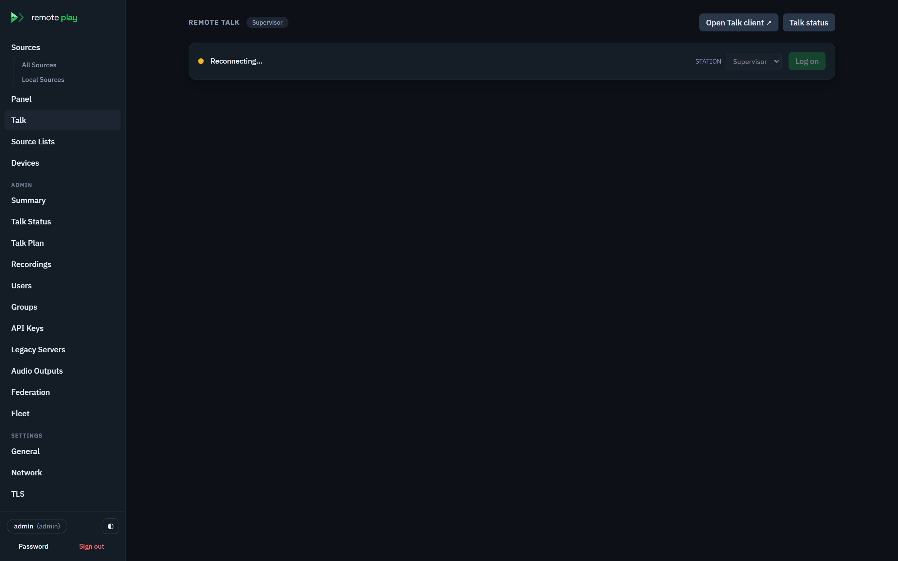
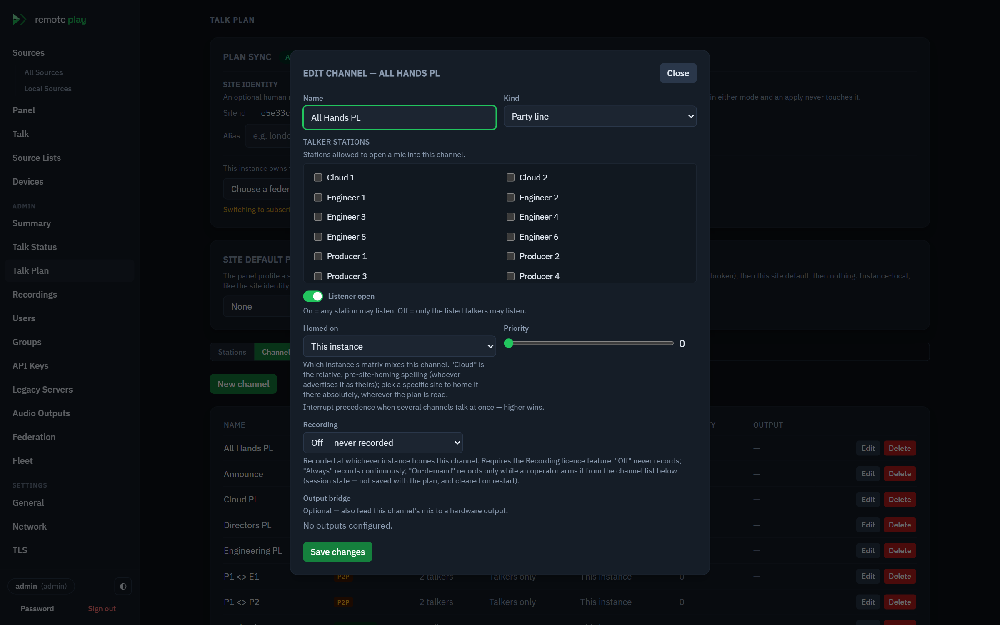
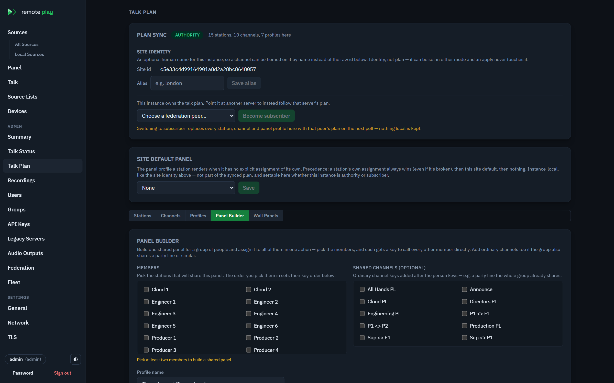
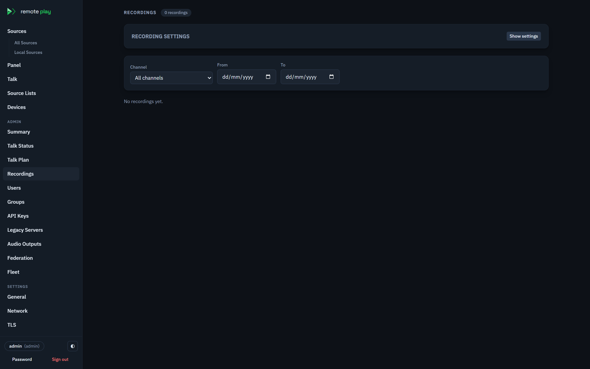
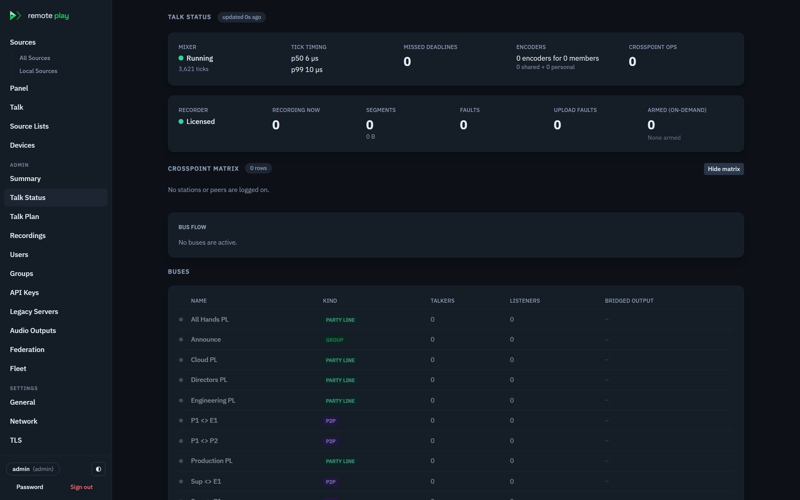
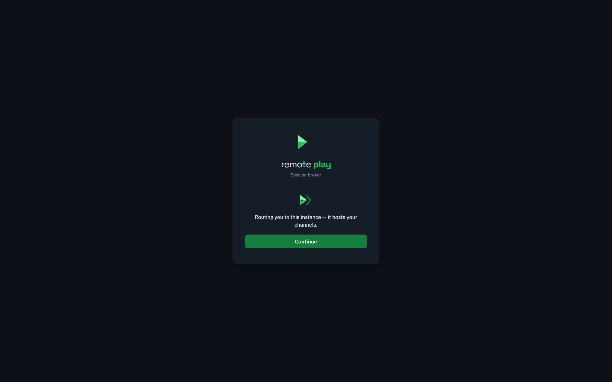
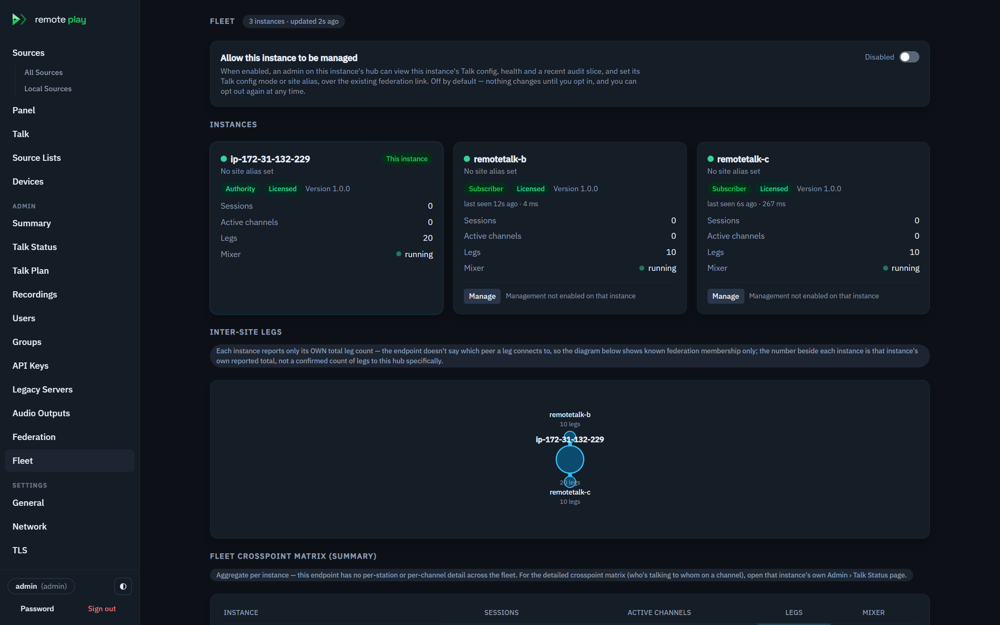
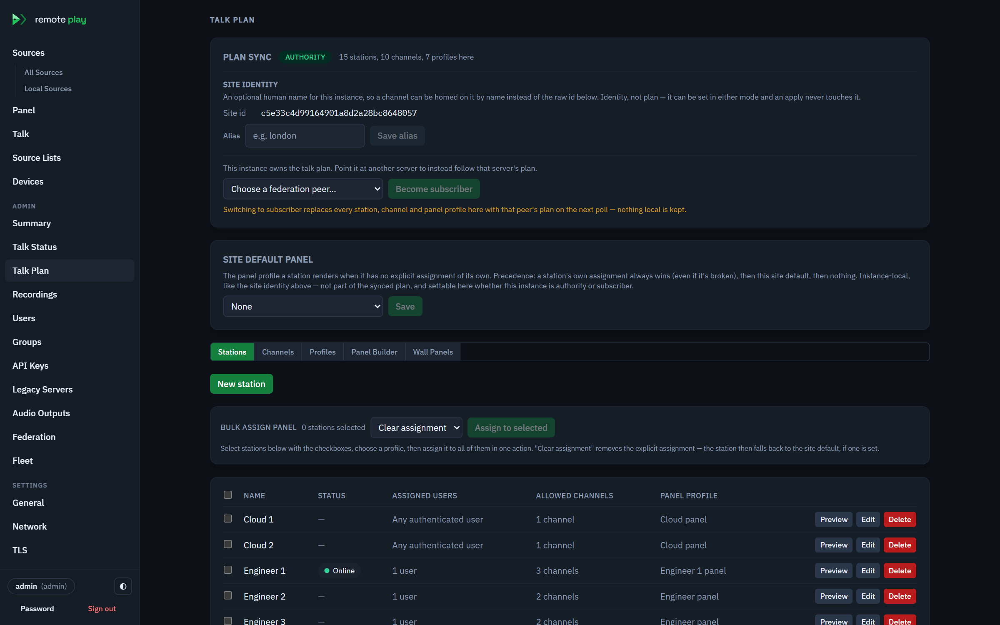
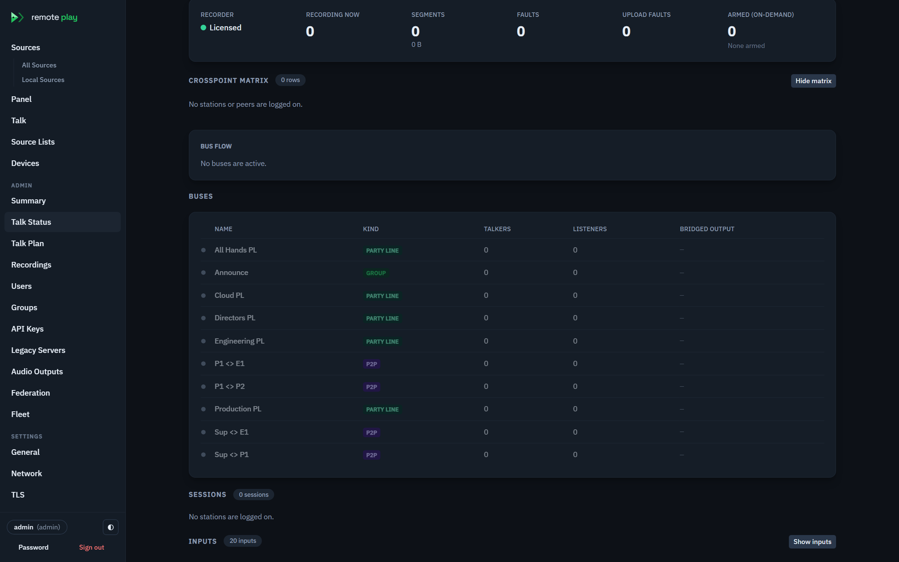
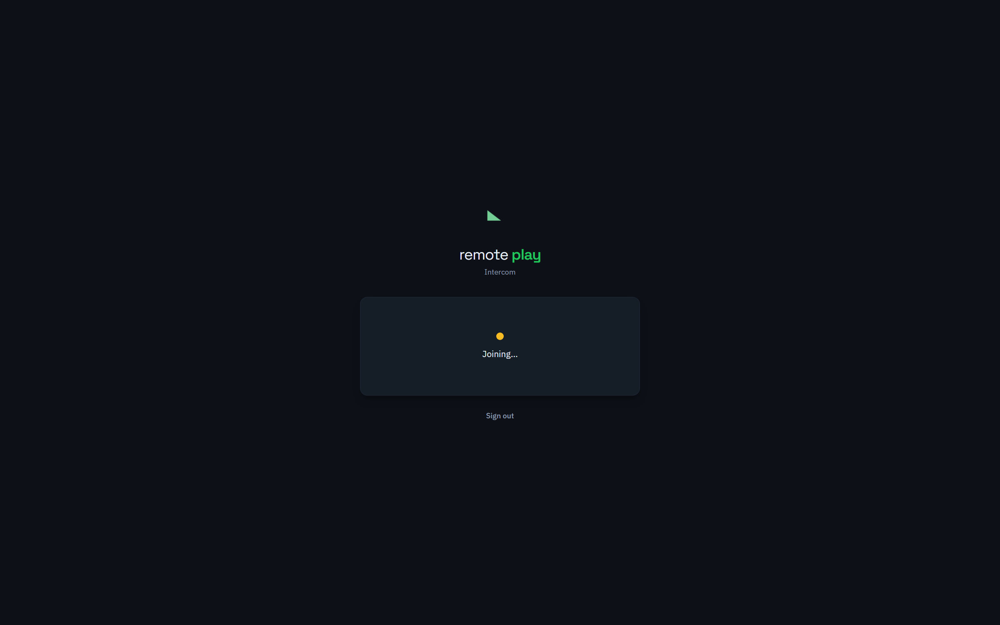

RemotePlayCore Remote Talk Epic RPC-126 Manual RPC-201 31 Jul 2026
The complete operator-and-engineer manual for the browser intercom: the signal path, the ten-millisecond mix matrix, the four channel kinds, the panel plane, recording, and the federated fleet — with hand-drawn schematics and every UI label quoted as it ships. Where a thing matters only to whoever builds the plan, it is marked engineer; where it is what an operator needs at the desk, operator.
Remote Talk is a broadcast intercom, so it borrows its vocabulary from Clear-Com and RTS rather than from telephony. Learn these terms in this order and nothing later is surprising. The UI names are quoted exactly as they appear.
| Term | What it is | Why it matters |
|---|---|---|
| Station | A named talk position — like a SIP account. Holds a display name, an allow-list of channels, an assigned set of users and groups, and a panel profile. Admin calls it a Station under Talk Plan › Stations. | A person logs on to a station; the station, not the person, is what the system routes. One station is live on one instance at a time — the portal (§08) enforces that across the fleet. |
| Channel | A named audio bus, of one of four Kinds: pl (Party line), group (Group), p2p (P2P), ifb (IFB). |
A channel is a bus, not a conference call. Mixing happens once per channel, whether one person hears it or four hundred do. |
| Talk / Listen key | Two independent halves of one key on a panel, labelled Talk and Listen. Talk opens your mic into the channel; Listen subscribes you to its mix, with its own Listen level. | Separate on purpose — listening to six channels while talking on one is the normal case, not an edge case. |
| Mix-minus | Your return feed is the channel mix minus your own voice. | Non-negotiable. Hearing yourself back over a network round trip makes a party line unusable within seconds. |
| Tally | The lamp saying somebody is talking on a channel. The client shows "{count} talking"; your own open mic shows the MIC badge. |
Tally follows key position, not gate state — a keyed-up desk saying nothing still lights it. |
| Dim | The automatic drop in an IFB channel's program level while an interrupt talker is live. Admin sets the depth (Dim / Custom dim level, −60…0 dB). | Lets a producer cut over programme in the talent's ear without a fader. |
| Home instance | The single server whose matrix mixes a given channel — Homed on in the channel editor: This instance, Cloud, or a named Site. | The whole multi-site story: audio is mixed in exactly one place; other sites exchange one feed with it. |
| Pair line | A hidden private line the server materialises on demand for a station-key — a key that targets a person instead of a channel ("Direct line to a person (station key)"). |
It is how "call Desk 2 directly" works without an admin drawing a p2p channel for every pair. |
| Reply | A single key, labelled Reply, that dials back whoever last called you. Shows a Recent caller list. | Built on the station-key primitive — answer a call without hunting for the caller's tile. |
Pick a station, press Log on, allow the microphone. Each key has a Talk half and a Listen half. Hold Talk to speak; the lamp lights when anyone (including you) is talking. You never hear yourself. Everything below this line is how it works underneath — reach for it when something looks wrong, not before.
When somebody joins, exactly one WebSocket and one WebRTC peer connection are created for their station, and both live as long as the logon does. Every key press, every level, every tally travels on that pair. There is no second track and no renegotiation once audio is up.

/talk client is the same intercom full-screen./ws/talk?access_token=<jwt> and sends {"type":"logon","stationId":"…"}.station-in-use ("That station is already logged on elsewhere."), not-assigned ("Your account isn't assigned to that station."), or unknown-station. A station assigned to nobody is open to any authenticated user.logon-ok with the station document and its panel profile — the exact key layout the panel draws, plus maxMonitors, slotCount and each key's page.Talk:MediaPortRange, default 40000-40199. On a cloud box behind 1:1 NAT, Talk:PublicIp adds one host candidate carrying the reachable address (§08).
Station access is users ∪ groups. The editor states the
rule inline: "Empty = any authenticated user may log on. Admins can
always log on regardless of this list." and, for groups,
"Members of any listed group may also log on — access is users plus
groups." The summary line reads back one of three states:
"Open — any authenticated user may log on." — no users, no groups."Restricted to the listed groups' members only (no individually assigned users).""Restricted to the listed users, plus any listed groups' members."Assignment travels the fleet by username and group name, never internal id — an unknown name is kept inertly (granting nothing) and starts working the moment that account or group is created on the instance.
→ logon {"type":"logon","stationId":"…"} bind this socket to a station
← logon-ok {"type":"logon-ok","station":{…},"profile":{…}}
+ maxMonitors, slotCount, keys[].page
← logon-error {"code":"station-in-use"|"not-assigned"|"unknown-station"
|"already-logged-on"} last one: a 2nd station on one socket
⇄ offer/answer/ice WebRTC, trickled both ways
→ key {"type":"key","channelId":"…","talk":bool,"listen":bool,"latched":bool}
→ level {"type":"level","channelId":"…","gainDb":-∞..+6} ≤ −120 = mute
→ reset-listen {"type":"reset-listen","channelId":"…"} back to the key default
← state {"channels":[{id,talkers[],myTalk,myListen}],"talkerNames":{key→name}}
→ monitor {"type":"monitor","sourceKey":"…","on":bool,"duckDb":n,"duckBy":…}
← monitor-state {"all":bool,"sources":[{key,on,gainDb,ok,reason,duckDb,ducked}]}
← config-changed re-fetch: client answers with a re-logon
Talk/listen keys are not acknowledged — the server
pushes a state frame carrying every channel's talkers and
your own position, so a panel renders from server truth rather than from
what it thinks it pressed. Monitoring an ordinary source is
acknowledged (monitor-state carries ok and a
reason), because a source key can fail to resolve and the
operator needs to be told why they hear nothing.
A second logon for the same station on a socket that
already holds it is how a plan edit is picked up: the server re-issues
logon-ok → monitor-state (whole set) →
state. A logon for a different station
on a live socket is refused already-logged-on; the media leg,
matrix registration and claim are all bound to one identity. A client that
wants a second station opens a second socket.
Engineer The engine is a dedicated thread on a deadline grid ticking every 10 ms — 480 mono float32 samples at 48 kHz — with no allocation once warm. Each tick does four passes in this order, and the order is what keeps the cost linear.
The regression test pins this exactly: grow a party line from 10 to 400
members with the same two open mics, and crosspoint ops come out at
members + 4 every time while encodes stay at 3.
Quadrupling the room quadruples the work; it does not multiply it by sixteen.
Both numbers are read straight off Talk Status — the
Crosspoint ops figure and the Encoders
line, which shows "{shared} shared + {personal} personal".
One Opus encode of one 10 ms frame, at the settings we ship (32 kbps, complexity 5, VBR, in-band FEC), costs about 145 microseconds on a 22-core dev box. The tick budget is 10 000 µs and every encode is on one thread — so an instance produces roughly 69 distinct feeds per tick, no more, whatever the core count. The mix arithmetic is nowhere near the problem: a thousand people on one line is under one percent of the budget.
Fastest of five batches, Release build, 22-core box. Teal = mix arithmetic with no codec. Red = past the deadline — dropped ticks and audible breakup. 145 µs/encode is this box's number; measure tickP99Us on the target hardware.
A panel with more than one listen key open cannot share an encode — sharing needs a feed bit-identical to a bus mix (one channel, unity level, own mic shut, no duck). Real operators listen to several channels at once, so in realistic use the encode count tracks headcount, and the ceiling is roughly 50–70 stations per instance. Scale out by instance, not up: the fleet (§08) is the answer, and one leg per channel is what makes it cheap.
tickP99Us and missedDeadlines in GET /api/talk/status, and the Encoders census beside them.Talk:MediaPortRange (200 wide by default), so an instance stops near 200 concurrent stations whatever the CPU says.Two levers exist and are designed for: swap Concentus for a native libopus binding behind the IOpusTalkEncoder seam (roughly doubles the ceiling), and parallelise the two encode loops (embarrassingly parallel, serial today by choice).
This is the part of an intercom that surprises people. Four stations on one party line, two of them talking.
The subtraction is one pass, not per crosspoint. When the plan compiles, each station's own contribution is pre-totalled across every bus it both talks on and listens to, at that bus's listen level. At tick time that is a single scaled subtract of the exact frame that went up.
Someone alone on a channel hears nothing at all, by design. Their own voice is the only thing on the bus, and mix-minus removes it. Combined with the noise gate — which stays shut on a silent or badly-configured mic — this is exactly what a first-time user reports as “it's broken”. A mic capturing −90 dBFS of nothing looks identical to a working intercom with nobody on the other end. Confirm it from the Uplink meter in Talk Status, not from what the operator can hear — §10 has the full script.
All four are the same bus with different rules about who may key up and who may listen. Nothing about the mixing changes.
Two lines decide whether an operator has a key at all:
canTalk = named-talker OR (pl AND no named talkers), and
canListen = ListenerOpen OR canTalk. A key exists only if the
channel is on the station's allow-list. One consequence to state plainly:
there is no talk-only key — if you may speak on a channel,
you may hear it.
| Kind | May key up | May listen | Typical use |
|---|---|---|---|
| pl | Everyone on the allow-list — unless the channel names talkers, then only those. | Everyone, if Listener open; else talkers only. | Crew line, production talkback. |
| group | Only stations in Talker stations. | Everyone, if Listener open (the default). | One-to-many announcement. |
| p2p | Only the two named stations ("A P2P channel needs EXACTLY two talker stations."). | The same two. | Private line. |
| ifb | Only named stations (the interrupters). | Whoever carries a listen key — the talent. | Interrupt feed with programme dim. |
A brand-new IFB defaults to Listener open = off, which means the only stations with a key are the interrupters — the talent, the whole reason the channel exists, hears nothing. Turn Listener open on for the talent's side. And a p2p line with Listener open switched on is no longer private: any allow-listed third station gets a listen key. Leave it off on a private line.

"a talk station/channel can't be used as the program source") and Custom dim level — "How far the program is ducked while an interrupt talker is active."
Dim follows the energy gate, not the key — programme un-dims
250 ms after a talker falls below −50 dBFS, so it lifts
under natural pauses and ducks for headphone bleed, unlike a hardware IFB
that dims on key-down. The dim is applied at the bus before
mix-minus, so the interrupter's own programme reference is ducked by their
own talking. And DimDb left null is unity — an IFB created
with the dim control off does not duck at all; it uses the
engine default only when you leave Custom dim level off
but the channel still carries a default. Set a deliberate depth for
anything that matters.
A panel profile is a named set of keys, shared across stations. Building one does not build a bus — buses come from channels; a key is a view onto a channel (or a person) that already exists. Get that the right way round and most of what looks surprising when an admin edits a live system explains itself.
Filled amber = your mic is open. Amber outline = tally, somebody else is talking. Filled teal = you are listening. ↔ = a station-key (direct line to a person). ● REC = the channel is being recorded. Dimmed = present but idle.
A key may target a person instead of a channel — a
station-key, shown with the tooltip "Direct line to a person
(station key)". It needs no pre-authored channel: the server
materialises a hidden private line for the pair on demand, with a stable id
pair:<loId>:<hiId>, and reaps it when the last end
logs off. The pair never appears in the plan, in RTAP, or in a non-member's
state frame — a private line stays private, structurally.
The Reply key (talk.reply.label = "Reply")
answers the last caller without hunting for a tile: it shows a
Recent caller list, resolving the caller's display name from
the state frame's talkerNames map, and falling back
to "Station {id}" when a name isn't known (a federated far end).
| Field | Effect |
|---|---|
| label | A custom key label; empty falls back to the channel or target name. Capped at 64. |
| noLatch | Forbid latch — momentary only, for discipline-critical channels. The client shows "Momentary only — this key can't be latched. Hold to talk." A latching+noLatch combination is refused at save. |
| defaultListenGainDb | The key's default listen level, applied at logon before any personalization. Null = unity; a stored −120 is mute-by-default. |
| talkMode | Momentary / Latching / Both — the last splits by hold-vs-tap. On mobile a latch is a double-tap, deliberately: a pocket tap that latches your mic open into a live line is the worst failure mode this product has. |
Operator listen levels and toggles are persisted per (user,
station) and survive a reconnect — the precedence is key default
< saved personal pref < live in-session change. Reset to
default (reset-listen) clears the personal pref and
snaps the key back to its authored default. Personalization is listen-only;
it never touches talk rights or key layout, which are the admin's.
A profile carrying more keys than one rack page shows uses Page
(0..32) to group slots — "slot numbering restarts on each
page." The client renders a page selector ("Page {n}").
A profile is a versioned template. An edit is a
Draft until Publish; only published
versions distribute to the fleet. The rule the UI states:
"Edits here are a draft until published — stations on this instance see
the draft immediately, but the rest of the fleet only ever receives the last
published version." Version history lists every
publish; Roll back re-publishes an earlier snapshot as a
new version — "nothing is deleted from the history."

"Build one shared panel for a group of people and assign it to all of them in one action." Preview as shows each member's self-excluded view before you commit.
A station can hear an ordinary Remote Play source — a Livewire feed, an AES67
stream — through the connection it already has. No second
track: the source is summed into the personal mix on a hidden bus. The cap is
Talk:MaxMonitorsPerStation (default 4, ceiling 32, 0 disables),
reported to the client as maxMonitors. Monitors are session
state — released on logoff, on a dropped socket, and on any plan
change.
A monitor can be turned into a personal IFB with
Duck: "Personal-IFB duck: dips {db} dB while a talker
is live on the armed channel(s)". Counts as an
interruption is either "Any channel this station listens
to" or "Only these channels". It gets programme out of the
way of intercom without touching a fader — and Talk Status
shows the live trigger as Ducked now.
Memberships follow the station's allow-list, not its panel
profile. Removing a tile hides the key but leaves the matrix membership
sitting idle — harmless, but it is not how you take someone off a
channel. For that, remove the channel from the station's allow-list, or
delete the channel. And a plan edit pushes config-changed to
every live session, which releases every monitored source
— so an admin tidying a channel name quietly drops everyone's monitoring.
Talk and listen keys are unaffected.
Any channel's bus mix can be recorded at the instance that homes it, so a cross-site channel is recorded exactly once, at home, not per member site. Recording is its own licence feature (Channel recording) — an instance can run intercom without it, and every recordings endpoint 403s when it is idle.
Recording in the channel editor is
"Off — never recorded", "Always", or
"On-demand". The hint is exact:
"Recorded at whichever instance homes this channel. Requires the
Recording licence feature. \"Off\" never records; \"Always\" records
continuously; \"On-demand\" records only while an operator arms it from the
channel list below (session state — not saved with the plan, and cleared on
restart)." On-demand arming is Arm /
Disarm per channel; the badge "On-demand"
("Records only while armed — currently disarmed") flips to the
red REC badge when live.
A recorded channel raises recording: true in the
logon-ok profile keys and in every state
frame, so a member panel shows "This channel is being recorded"
the moment it logs on. And a p2p line is refused recording
unless the instance sets Talk:Recording:AllowPrivateRecording=true
and the channel is Always — an ambiguous on-demand
private recording is never permitted, enforced at the admin surface and in
the recorder both ("A private (P2P) channel may only be recorded with
\"Always\" — \"On-demand\" is never permitted for a private line.").
DataDir/recordings/<channelId>/<utc>.opus, rotated by Talk:Recording:SegmentSeconds (default 300) and closed after a GapCloseSeconds silence. Each segment carries a JSON sidecar timeline of talker events.Talk:Recording:S3:Bucket is set — via the AWS default credential chain (the EC2 instance role on the fleet), so no access key is ever stored. Uploads run on a background queue with retry; a failure is counted in Talk Status uploadFaults and never deletes the local copy.Talk:Recording:RetentionDays (0 = keep forever) sweeps local segments; legal hold (Place hold / Release hold) is exempt, and a held recording refuses deletion ("On legal hold — release the hold before deleting."). S3 retention is a bucket lifecycle policy, not the app's job.?access_token= so a browser <audio>/download link works. The ticket is scoped (not single-use) on purpose — a seeking audio element issues many range requests.

Two rules carry the whole distributed design: a channel is mixed on exactly one instance, and sites exchange one audio leg per channel, never one per person. Everything below — homing, the config authority, the portal, SSO — is built on those two.
Engineer
A channel is Homed on This instance, Cloud
("the relative, pre-site-homing spelling (whoever advertises it as
theirs)"), or a named Site — stored absolutely as
site:<id> so the topology survives wherever the plan is
read. A remote instance carrying members of a homed channel exchanges
one media leg per channel on Talk:LegPort
(default 40500 — one inbound port for every leg from every site), told apart
by the channel key in each leg's hello.
legup:<channelId>) carrying local talkers only — raising the real bus would fold the returned mix straight back up. The inbound home mix arrives as a program-style input, heard through the ordinary mix-minus path.
One instance is the authority; the others are
subscribers that pull its channel plan, stations and profiles
on the same federation poll. An apply replaces the three collections
wholesale — a subscriber cannot drift — which is why entering subscriber mode
needs a confirmation naming what will be replaced, and why every plan tab goes
read-only under a banner: "This talk plan is centrally managed by
{authority} — it's read-only here. Edit it from the authority instance
instead." If the authority is unreachable, nothing is wiped: the cached
plan keeps mixing.
The fleet authenticates against one shared identity pool (Cognito). Accounts
are provisioned, group-synced and deactivated centrally; a disabled account
is refused across the fleet ("Disable \"{name}\"? This immediately ends
any of their live Talk sessions and blocks sign-in until re-enabled."),
and an orphan review surfaces identities no longer backed by
the directory. SSO no longer disables password login — the capability is the
stored hash, not a label — so a user can hold both.
jti; returnTo
is re-validated same-origin at both mint and redeem.
A station lives on one instance, so with a fleet an operator must reach the
right one. The portal ("Session broker") is the
single URL: authenticate once on the authority, and
GET /api/portal/allocate picks an instance by policy and
redirects — "Routing you to {instance} — {reason}." The decision
is a pure, deterministic function, testable directly.
Portal:InstanceSessionCeiling
(default 200); then, if all are full, the hub.
Exclusivity is best-effort at brokering, not a fleet-wide lock: RTAP is a poll, so two near-simultaneous allocations can still both route before either shows in presence. It collapses the common double-logon (a user opening the portal twice); a hard cross-instance claim is the follow-up. And there is no region/geo attribute today — "region affinity" is realised as channel-home affinity, which is the best the plan can infer; true GeoIP routing is a later score before capacity.

"Finding your instance…" and "Routing you to {instance} — {reason}." with reasons like "it hosts your channels" or "it's the least busy instance right now".
The Fleet dashboard is a hub-side inventory built entirely on
the existing federation plane — no new poller. Each instance serves a cheap
self-descriptor (GET /api/federation/health) read from the mixer
snapshot; the hub aggregates them at GET /api/fleet/status. Per
instance it shows Sessions, Active channels,
Legs, Mixer (running/stopped), config mode
and licence — a member never disappears, holding its last-known identity while
Stale or Unreachable.
The management proxy lets the hub act on a direct
member over the same link — but only within four controls: the caller is a hub
admin; tokens are scoped, mint-on-demand and 60 s (no stored
super-token); every op is audited on both ends; and the member must opt in
(Allow this instance to be managed,
"Off by default — nothing changes until you opt in"). Reads are a
mirror; the one shipped write is setting a member's Talk config mode / site
alias, and its destructive form still travels the confirm required
guard back through the proxy: "On its next poll, every station, channel
and panel profile there will be REPLACED by {authority}'s plan — nothing local
is merged or kept."

"Each instance reports only its OWN total leg count", and for detail you open that instance's own Talk Status.
Nothing routes audio to a person. Two p2p channels
(ch-x = b2+a1, ch-y = b1+a2) are two buses; a talk
key selects a bus, a listen key subscribes to one, and the two buses never
touch. Each crosses on its own leg — two legs, one UDP port
on the home (40500), told apart by the channel key in each hello. Each leg
carries a shadow bus up (that site's talkers only, never the returning mix)
and the home's mix-minus sends back the bus minus that site's contribution.
a1 has no key on ch-y, so a1's
state frames never mention it: the private line stays private.
Cross-instance audio for a station-key pair is shipped for the
two-region common-home case (the authority homes the pair); the far-end
tally glow across instances is the one deferred piece.

"Channels this station may key up.") and its Assigned users / Assigned groups — or leave both empty for a shared kiosk position open to any authenticated user.
Open Talk Plan › Panel Builder. Pick the members (the
order sets key order), optionally add Shared channels (a party
line the group already has), name it, and use Preview as to
confirm each member's self-excluded view. Build panel and assign to
members creates the profile and assigns it to every chosen station at
once — "Created \"{profile}\" and assigned it to {count} stations."
A member not yet allowed on a chosen channel is flagged, not blocked:
"{member} isn't allowed on \"{channel}\"" — the key renders but
won't work until you grant the channel.
A Talk key can sit on an ordinary monitoring panel beside
source pads (it shares the signed-in session's connection). On a
kiosk page (/p/{slug}) it is different: a kiosk
has no station logon, so a talk pad renders as a static, labelled key with a
TALK badge and a link to the full client, and the wall view
marks a recorded channel "Recorded". A kiosk cannot show live
tally today — it holds no authenticated station connection to receive it. For
a live, tallying key, sign in at /talk or use a panel from a
signed-in console session.
PUT /api/talk/config, confirming the replace) — or drive it from the hub via the management proxy if the member has opted in.40000-40199 UDP in for browser media, outbound HTTPS to the authority; mix/home instances also need 40500 UDP in. Set Talk:PublicIp on any cloud box behind 1:1 NAT.
| Symptom | Likely cause | What to check |
|---|---|---|
| I'm on a channel but hear nothing | You're alone on it, or the other mic is gated shut. Mix-minus removes your own voice, so a bus with only you on it is silent by design. | Open Talk Status: the channel's Buses row shows Talkers/Listeners — if talkers is 0, nobody is speaking. Confirm the far mic on its own Uplink meter, not by ear. |
| Talk key never opens; mic never arms | The browser refused the mic, or the page isn't a secure context. | getUserMedia needs HTTPS (or localhost) — a plain http:// LAN console won't even prompt. Check the address-bar mic icon; the client shows "Microphone access was denied — you can still listen, but talk keys won't work." |
| Stuck on Connecting… / Reconnecting… forever | A stalled WebSocket or an ICE negotiation that never settles (often UDP blocked outbound — there is no TURN). | Hard-refresh rather than re-pressing Join; the client backs off up to 5 times then gives up with "Connection lost after {count} attempts." In Talk Status, an ICE stuck amber and "no pair yet" points at connectivity; confirm 40000–40199 UDP is open and Talk:PublicIp is set on a NATed cloud box. |
| Talk cuts out after a few seconds, every time | The instance isn't licensed for Remote Talk. | Settings › Licence → Remote Talk. Unlicensed sessions get a 5-second preview then close with "Remote Talk preview ended — a licence is required to continue." |
| A panel keeps showing an old layout after an admin edit | Expected briefly — the client answers config-changed with a re-logon. If it persists, the profile edit may be an unpublished Draft. |
The fleet only receives Published versions; Publish the profile. Local live panels render the draft, subscribers render the last published. |
| Everyone's monitoring dropped when I renamed a channel | Expected — a plan edit pushes config-changed, which releases every monitored source (they're session state). |
Nothing to fix; monitors re-arm on the client's re-sync. Talk/listen keys are unaffected. |
| A kiosk talk key never lights up | Expected — kiosk keys are static, with no station connection to receive tally. | Sign in at /talk or use a panel from a signed-in console session for a live, tallying key. |

In a fault call, don't be caught by this: the state frame's
tally is key position (a keyed-up desk saying nothing still
counts), but Talk Status's Buses active is
gate state (is a mic actually passing audio). A glowing
panel and a dim bus row are both correct — one is "keyed", the other is
"audible".